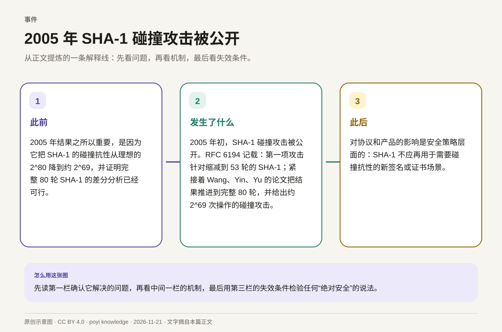

原理与机制
事件：2005 年 SHA-1 碰撞攻击被公开（The 2005 full-SHA-1 collision attack）。2005 年初，SHA-1 碰撞攻击被公开。RFC 6194 记载：第一项攻击针对缩减到 53 轮的 SHA-1；紧接着 Wang、Yin、Yu 的论文把结果推进到完整 80 轮，并给出约 2^69 次操作的碰撞攻击。2005 年论文（CRYPTO 2005，LNCS 3621）报告的是攻击方法与复杂度估计，不是一条可以直接下载验证的具体碰撞消息对。SHA-1 输出 160 位摘要，完整算法为 80 轮。对 160 位摘要，通用生日攻击约需 2^80 次操作；2005 年的 2^69 估计因此明显低于理想碰撞强度。它不改变 SHA-1 的原像或第二原像安全性结论：RFC 6194 指出，2005 年结果是碰撞攻击，截至 2011 年没有已知的完整 SHA-1 原像攻击。真正可独立验证的完整 SHA-1 碰撞实例出现在 2017 年：Stevens 等的 SHAttered 给出两条哈希相同、显示内容不同的 PDF。2020 年 Leurent 与 Peyrin 的 Shambles 又给出了选择前缀碰撞，并演示了 PGP/GnuPG 身份冒充。三者是相关但不同的事件，不能把 2005 年的 2^69 估计直接等同于 2017 年的实际碰撞，也不能把 SHAttered 当作 2005 年的成果。

为什么重要
2005 年结果之所以重要，是因为它把 SHA-1 的碰撞抗性从理想的 2^80 降到约 2^69，并证明完整 80 轮 SHA-1 的差分分析已经可行。对数字签名和证书而言，碰撞抗性是签名只绑定一个消息的关键假设；碰撞成本下降会直接侵蚀这一假设。RFC 6194 在 2011 年总结 SHA-0/SHA-1 安全考虑时指出，SHA-1 的碰撞抗性显著低于理想哈希函数，并建议协议设计者认真考虑支持更强的哈希。NIST 随后限制 SHA-1 的签名用途：NIST 建议 2010 年 12 月 31 日之后不再用 SHA-1 生成数字签名，并规定美国联邦政府机构在 2013 年 12 月 31 日之后不得为敏感但非机密信息生成 SHA-1 签名。
应用与实例
对协议和产品的影响是安全策略层面的：SHA-1 不应再用于需要碰撞抗性的新签名或证书场景。NIST SP 800-131A Rev.2 表 8 对 SHA-1 的数字签名生成、签名验证、不要求碰撞抗性的非签名应用分别给出判级"disallowed"、"legacy use"与"acceptable"；其中数字签名生成不允许，除非 NIST 协议特定指南明确允许。SHAttered 论文指出，尽管已被弃用，SHA-1 在 2017 年仍广泛用于文档与 TLS 证书签名，以及 Git 等软件的完整性与备份；这正说明弃用建议与实际迁移之间的差距。本文只讨论 2005 年事件及其后续安全影响，不把 SHA-1 算法实体或 2017/2020 事件并入本事件。
边界与攻击面
2005 年是复杂度结果，不是公开的具体碰撞对：论文报告完整 80 轮、约 2^69 次操作的碰撞攻击；它给出了攻击方法、差分路径和复杂度估计，而不是可直接验证的两条消息。把它说成2005 年已经实际碰撞 SHA-1会混淆事件。2017 年才是首个实际碰撞实例：SHAttered 的两份 PDF 都是 422435 字节，SHA-1 都是 38762cf7f55934b34d179ae6a4c80cadccbb7f0a，但字节内容不同；该工作的计算量约等于 2^63.1 次 SHA-1 压缩，耗费约 6,500 CPU 年和 100 GPU 年。2020 年进一步扩展到选择前缀碰撞：Shambles 的选择前缀碰撞复杂度约 2^63.4（普通/同前缀碰撞约 2^61.2），实际计算用 900 块 Nvidia GTX 1060 GPU 跑了两个月，并演示了 PGP/GnuPG 身份冒充。作者的结论是 SHA-1 不应用于任何期望碰撞抗性的安全协议。边界：这些数字是复杂度或成本估计，不是运行时间测量；2005 年的 2^69、2017 年的 2^63.1、2020 年的 2^63.4 属于不同工作和不同攻击模型。SHA-1 的原像安全性并未被这些碰撞结果直接攻破；不要把碰撞、第二原像和原像混为一谈。
历史与背景
- 2005 年初：针对缩减到 53 轮 SHA-1 的攻击被公开。- 2005 年：Wang、Yin、Yu 在 CRYPTO 2005 发表 "Finding Collisions in the Full SHA-1"，报告完整 80 轮、约 2^69 次操作的碰撞攻击。- 2011 年 3 月：RFC 6194 汇总 SHA-0/SHA-1 安全考虑；NIST 同年正式弃用 SHA-1。- 2017 年：Stevens 等在 CRYPTO 2017 发表 SHAttered，给出首个完整 SHA-1 实际碰撞实例。- 2019 年 3 月：NIST SP 800-131A Rev.2 表 8 给出 SHA-1 的当前用途状态。- 2020 年 8 月：Leurent 与 Peyrin 在 USENIX Security 发表 Shambles，给出 SHA-1 选择前缀碰撞与 PGP 演示。
逐步示例与核验
2005 年的 2^69 次操作比生日攻击的 2^80 少约 2048 倍：2^(80−69) = 2^11 = 2048。这个比例说明复杂度估计的意义，但它不是实际运行时间。作为后续事件的可验证实例，SHAttered 的两份一页 PDF 都是 422435 字节，SHA-1 都是 38762cf7f55934b34d179ae6a4c80cadccbb7f0a，但字节内容不同；本批次用 SHA-1 教学实现和 Node/OpenSSL 复算这一对文件。它验证的是 2017 年碰撞，不是 2005 年的攻击结果。2017 年的 2^63.1 与 2020 年的 2^63.4 是不同工作的成本估计；2^(69−63.1) 约等于 59.7，说明 2017 年实际碰撞比 2005 年的理论估计又低了约六十倍（量级比较，非严格换算）。
参考出处
- Wikipedia search entry for 2005 年 SHA-1 碰撞攻击被公开. https://zh.wikipedia.org/w/index.php?search=2005%20%E5%B9%B4%20SHA-1%20%E7%A2%B0%E6%92%9E%E6%94%BB%E5%87%BB%E8%A2%AB%E5%85%AC%E5%BC%80
- A Brief History of Cryptology and Cryptographic Algorithms (Dooley, Springer 2013). https://link.springer.com/book/10.1007/978-3-319-01628-3